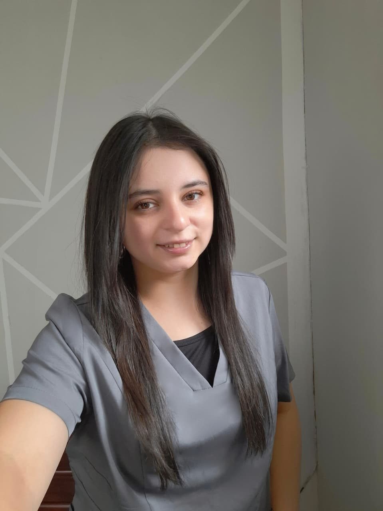

Recupera tu bienestar auditivo con un procedimiento rápido, seguro y con los más altos estándares de higiene.

Soy Fonoaudióloga titulada y certificada en lavado de oídos, comprometida con brindar una atención humana, segura y de confianza.
Mi prioridad es que te sientas cómodo(a) desde el primer momento, explicando cada paso del procedimiento y resolviendo todas tus dudas. Entiendo que el lavado de oídos puede generar preocupación, por eso trabajo con un enfoque cercano, profesional y cuidadoso, siempre priorizando tu bienestar y seguridad.
Todo lo que necesitas saber antes de tu cita.
El lavado de oídos es un procedimiento seguro y realizado por un profesional capacitado, que permite eliminar el exceso de cerumen o los tapones acumulados en el conducto auditivo. Su objetivo es mejorar la audición, disminuir la sensación de oído tapado y prevenir molestias como zumbidos, dolor o incomodidad, siempre priorizando la seguridad y el cuidado de la salud auditiva.
Aproximadamente 30 a 40 minutos por sesión.
Realizo atención domiciliaria para brindar mayor comodidad y tranquilidad, especialmente en adultos mayores, personas con movilidad reducida o quienes prefieren atenderse desde su hogar. Ofrezco una atención segura, cercana y profesional, manteniendo altos estándares de higiene y calidad en cada visita.
Evita realizarlo si presentas:
La atención comienza con una anamnesis, donde conversamos sobre tus síntomas, antecedentes y posibles molestias auditivas.
Se realiza una otoscopía inicial para evaluar el estado del conducto auditivo, identificar la presencia de cerumen y descartar posibles contraindicaciones.
Mediante una video otoscopía, podrás observar de mejor manera el estado de tu oído, permitiendo una educación clara sobre tu salud y el procedimiento.
Si todo está en condiciones adecuadas, se procede a la extracción de cerumen de forma segura, cuidadosa y profesional.
Finalmente, se realiza una revisión de control y se entregan recomendaciones junto a trípticos informativos para el cuidado auditivo en casa.
Selecciona el día y la hora. Recibirás una confirmación inmediata por correo.
Si necesitas hacer una consulta previa antes de agendar tu hora, no dudes en escribirme directamente.